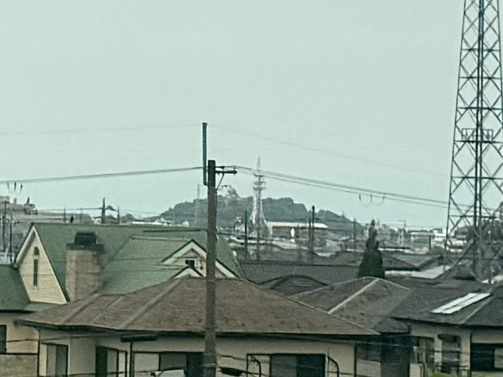

TOKAIDO SHINKANSEN WINDOW VIEW
彦根城は新幹線から見える？
国宝の天守を、街の向こうに。

- 見える区間
- 米原 → 京都
- 座席側
- E席・山側
- タイミング
- 東京発のぞみ基準で約116分後
- 写真
- 1 枚
彦根城の見つけ方
米原を出たあと、E席側の街並みの向こうに彦根城の天守が小さく見えることがあります。大きくはありません。だからこそ、見つけた瞬間にうれしい。琵琶湖東岸の歴史が、数秒だけ窓の中に入ってきます。
東京から新大阪方面へ向かう場合は、米原 → 京都が近づいたらE席・山側の窓を少し早めに見てください。新大阪から東京方面へ向かう場合は、通過順が逆になります。
東海道新幹線の車窓としてのポイント
彦根城は、富士山だけではない東海道新幹線の車窓を楽しむための見どころです。列車の速度が速いため、見える時間は短く、天気や座席位置によって見え方が変わります。